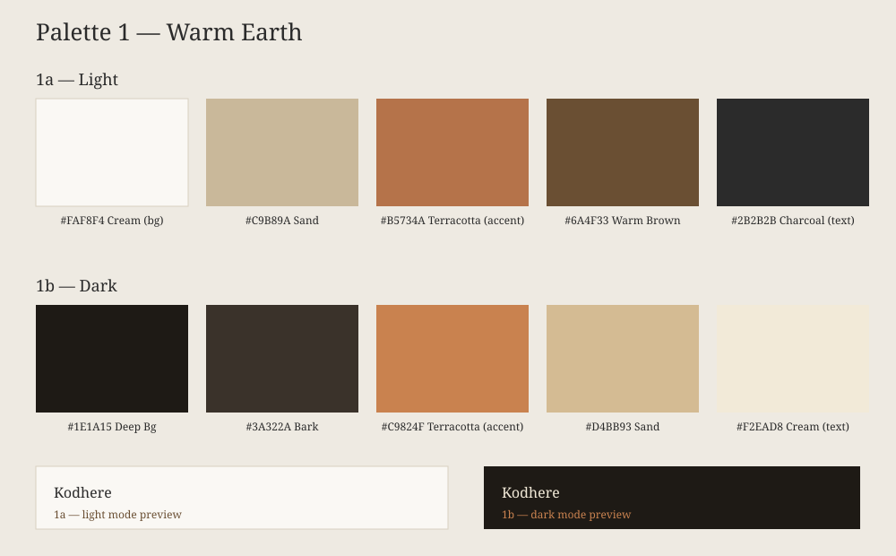
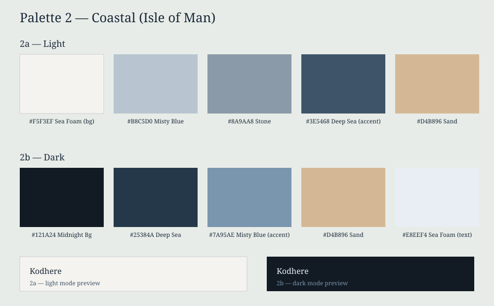
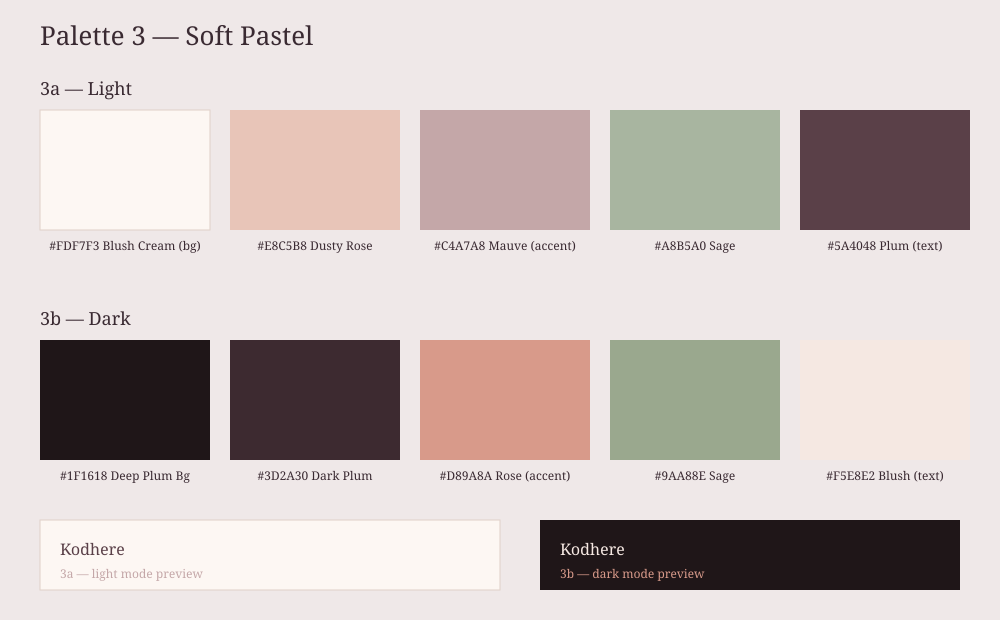
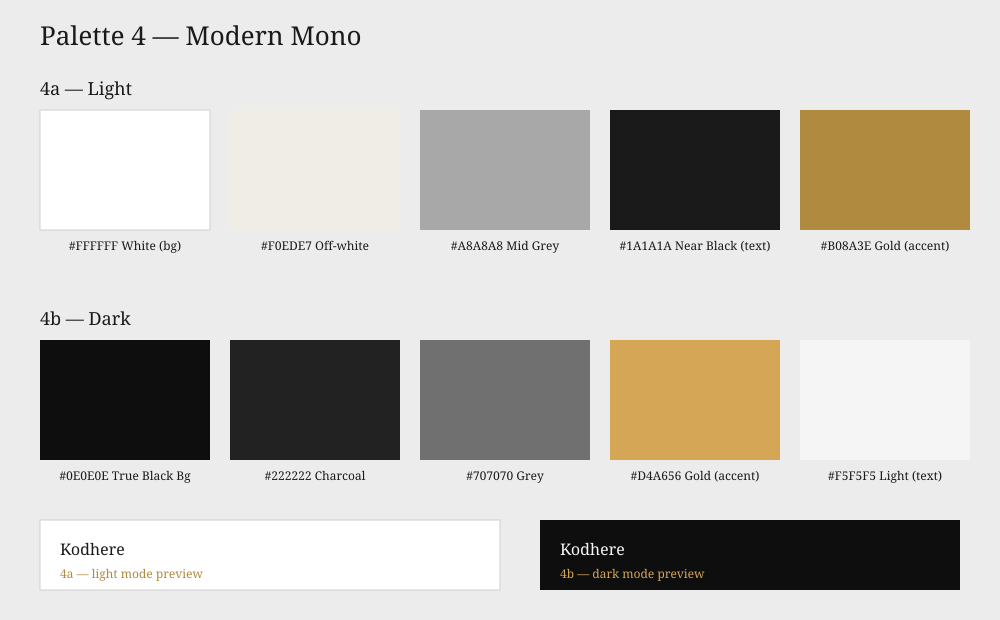
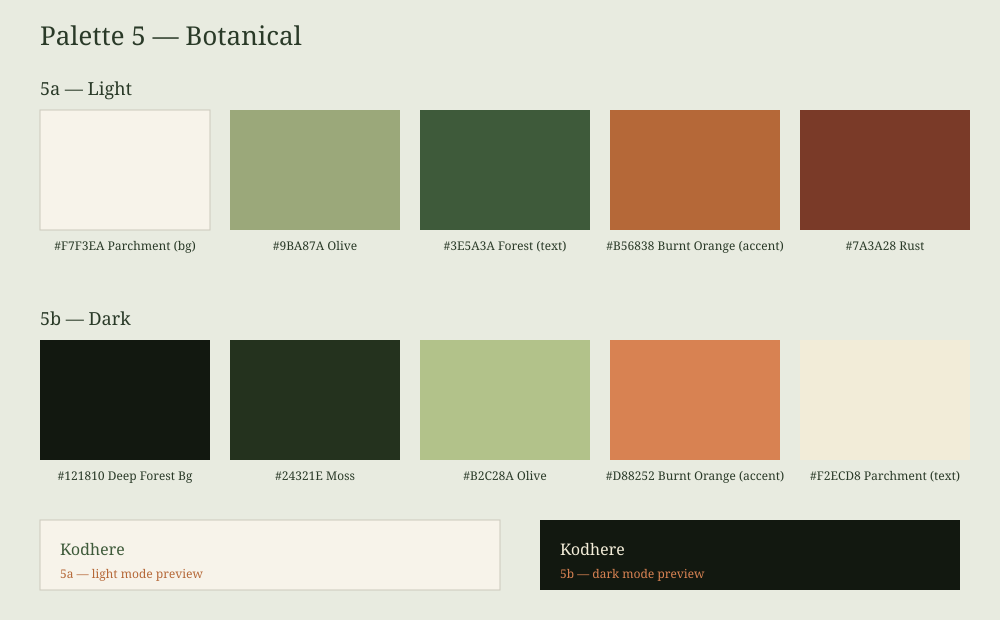

Five palettes, each with a light (a) and dark (b) version. Pick any combination you like — e.g. "2a" for coastal light, "5b" for botanical dark. The site can switch between light/dark with a small toggle button if you'd like.




